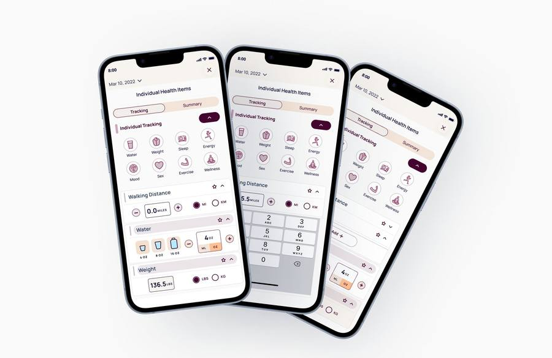
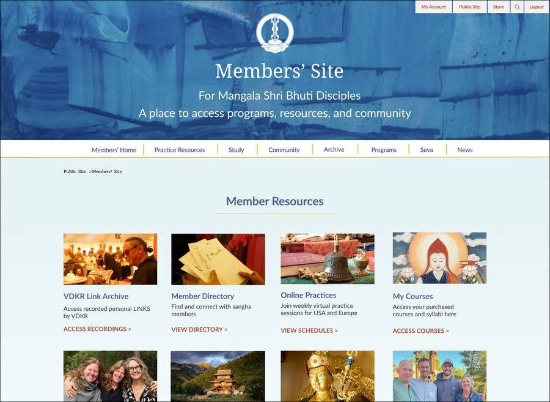
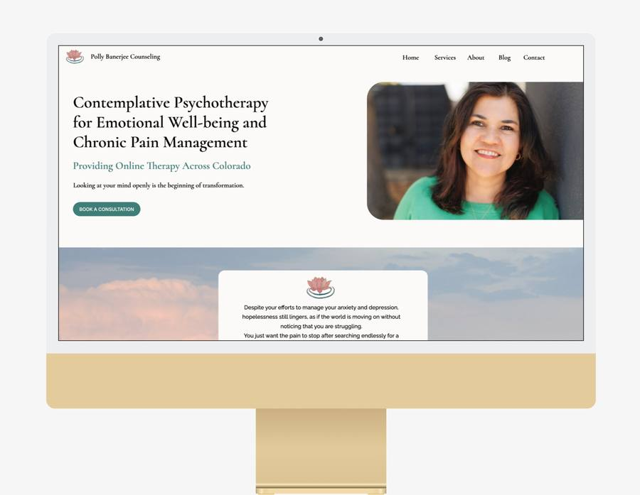
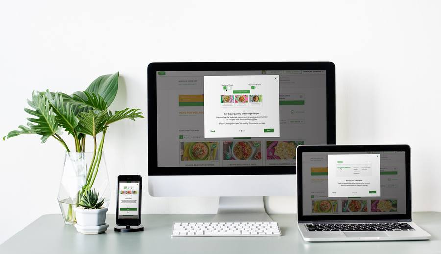

I lead product work from user research through launch, working alongside engineering and product teams to make design decisions and keep the project on schedule.
21 pixel-accurate metric designs mirroring Apple Health and Fitbit conventions, so engineering could integrate without rework.


Ran the project from first conversation to handoff. Full homepage and navigation redesign for a Buddhist community portal, from user research through information architecture, mega menu design, and visual direction.
Ran the project from first conversation to handoff: research, content strategy, and implementation. An 8-site competitive audit fed a redesign that made booking the clearest action on the page.


Led research and iterative design for a retention-focused onboarding overhaul, pivoting direction based on usability testing. Shipped to production and adopted platform-wide.
I'm a designer and project lead with a background in psychology and user research, so I start with people before I start solving problems. I take work from discovery through delivery and keep it coherent across stakeholders all the way to launch. AI runs through my process for research, synthesis, and design validation.
Read the full storyI pick the method based on what the team needs to decide, whether that's interviews, a survey, usability testing, or a card sort. Then I share the findings in a form product and engineering can act on.
Information architecture, user flows, wireframes, and prototypes. I design so people move through complex systems without much effort, working to WCAG standards so interfaces stay usable across devices.
I use Claude for research, project planning, and content development, and Claude Code to build and refine designs. Most of my recent freelance work has been with AI startups, where I manage projects and design AI products.
Scoping work, running timelines, and translating between what clients ask for and what the team builds. I have led projects solo and inside cross-functional teams.
Open to full-time, part-time, and contract roles.
Based in Boulder, CO and available remotely across the US.